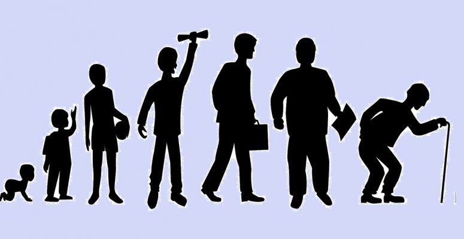

Techniki wizualizacji danych - PD10
MICHAŁ MACIĄG

Hierarchiczny wykres słupkowy przedstawia liczbę ludności wyrażoną w milionach w poszczególnych latach 2000-2009. Po kliknięciu w dany słupek pokaże się podział ludności na kobiety i mężczyzn. Następne kliknięcie w słupek pozwoli zobaczyć podział ludności ze względu na wiek. Zapraszam do zapoznania się z danymi !